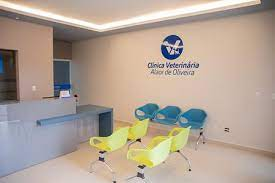
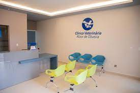

Sobre a Clínica:
Nossa clínica foi fundada em 2023 com o objetivo de oferecer um atendimento diferenciado na área de veterinária. Desde então, nos dedicamos a oferecer serviços de alta qualidade e uma equipe especializada para ajudar a manter os animais de estimação saudáveis e felizes.
Nossos Serviços:
Consulta de Rotina Oferecemos consultas de rotina para ajudar a manter o seu animal de estimação saudável e prevenir doenças. Cirurgia Realizamos cirurgias e procedimentos agendados em nossas instalações modernas. Emergência Disponibilizamos um serviço de emergência 24 horas que visa atender às necessidades dos seus animais de estimação em casos de emergência Banho e Tosa Oferecemos serviço de banho e tosa para deixar o seu animal de estimação limpo, feliz e bonito. Estamos abertos de segunda a sexta, das 9h às 18h, e aos sábados, das 9h às 12h. Em caso de emergência, você pode nos contatar a qualquer hora do dia ou da noite.